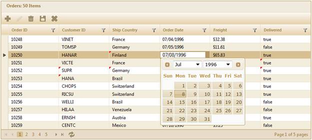

The steps to work with the editing feature through GridPropertiesModel are as follows:
1. Add the MicrosoftMvcValidation.debug.js file in the master page.
|
[ASPX]
<head runat="server"> <title><asp:ContentPlaceHolder ID="TitleContent" runat="server" /></title> ……… <script src="<%= Url.Content("~/Scripts/MicrosoftMvcValidation.debug.js") %>" type="text/javascript"></script> </head> |
2. Create a model in the application.
3. Add the following code in the Index.aspx file to create the Grid control in the view.
|
[ASPX]
<%=Html.Syncfusion().Grid<Order>("Grid1", "GridModel", column => { column.Add(p => p.OrderID).HeaderText("Order ID"); column.Add(p => p.CustomerID).HeaderText("Customer ID"); column.Add(p => p.ShipCountry).HeaderText("Ship Country").CellEditType(CellEditType.DropdownEdit); column.Add(p => p.OrderDate).HeaderText("Order Date").Format("{0:MM/dd/yyyy}"); column.Add(p => p.Freight).HeaderText("Freight").Format("{0:C}"); column.Add(p => p.Delivered).HeaderText("Delivered"); })
})%>
|
|
[Razor]
@{Html.Syncfusion().Grid<Order>("Grid1", "GridModel", column => { column.Add(p => p.OrderID).HeaderText("Order ID"); column.Add(p => p.CustomerID).HeaderText("Customer ID"); column.Add(p => p.ShipCountry).HeaderText("Ship Country").CellEditType(CellEditType.DropdownEdit); column.Add(p => p.OrderDate).HeaderText("Order Date").Format("{0:MM/dd/yyyy}"); column.Add(p => p.Freight).HeaderText("Freight").Format("{0:C}"); column.Add(p => p.Delivered).HeaderText("Delivered"); }) .Render(); )}
|
4. Create a GridPropertiesModel in the Index method and assign the grid properties in the model.
|
Controller GridPropertiesModel<EditableOrder> model = new GridPropertiesModel<EditableOrder>() { DataSource = OrderRepository.GetAllRecords(), Caption = "Orders", AllowPaging = true, AllowSorting = true, AllowGrouping = true, AutoFormat = Skins.Sandune };
ViewData["GridModel"] = model;
|
5. Enable the Excel-like editing mode by setting the edit mode to AutoExcel (or ManualExcel). Configure the editing property AllowEdit which specifies the action method that will perform the save operation as displayed below. Set the TimeSpan property which is used in saving the records automatically after the specified time interval in AutoExcel edit mode.
|
Controller GridEditing edit=new GridEditing(); edit.EditMode = GridEditMode.AutoExcel; edit.TimeSpan = 3000; edit.AllowEdit = true; edit.GridSaveMapper = "BulkSave"; |
6. Specify the primary property which uniquely identifies the grid record.
|
Controller
// Add the PrimaryKey value to uniquely identify the record. edit.PrimaryKey = new List<string>() { "OrderID" }; |
7. Add the edit setting to the model.
|
Controller
// Add the edit setting to the model. model.Editing = edit; |
8. Grid allows adding new records through grid toolbar items. In this example, AddNew, Edit, Delete, Save, and Cancel buttons have been added in the toolbar items. Therefore, configure the toolbar, as displayed below:
|
Controller // Configure the toolbar. ToolbarSettings toolbar = new ToolbarSettings();
toolbar.Enable = true;
// Add the Add New, Edit, Delete, Save, and Cancel buttons to the toolbar.
toolbar.Items.Add(new ToolbarOptions() { ItemType= GridToolBarItems.AddNew}); toolbar.Items.Add(new ToolbarOptions() { ItemType = GridToolBarItems.Edit });
toolbar.Items.Add(new ToolbarOptions() { ItemType = GridToolBarItems.Delete });
toolbar.Items.Add(new ToolbarOptions() { ItemType = GridToolBarItems.Update });
toolbar.Items.Add(new ToolbarOptions() { ItemType = GridToolBarItems.Cancel });
model.ToolBar = toolbar;
|
9. In the controller, create a method to save changes, as displayed below. In this example, the repository method BulkSave() is used to update records to the data source. In the below function, we can get the list of updated records through parameter “updatedRcds” using the bind prefix "updatedRecords". In the same way we can get the list of added and deleted records using the bind prefix “addedRecords” and “deletedRecords” respectively.
|
Controller
///<summary> /// Used to update the records in the database and refresh the grid. /// </summary> [AcceptVerbs(HttpVerbs.Post)] public ActionResult BulkSave([Bind(Prefix = "updatedRecords")]IEnumerable<EditableOrder> updatedRcds, [Bind(Prefix = "addedRecords")]IEnumerable<EditableOrder> addedRcds, [Bind(Prefix = "deletedRecords")]IEnumerable<EditableOrder> deletedRcds) { if (updatedRcds != null) OrderRepository.Update(updatedRcds); if (addedRcds != null) OrderRepository.Add(addedRcds); if (deletedRcds != null) OrderRepository.Delete(deletedRcds); // After saving the records to the data source, refresh the grid. var data = OrderRepository.GetAllRecords(); return data.GridJSONActions<EditableOrder>(); }
|
10. Run the application and edit the data as displayed below:

Figure 180: Excel-Like Edit throughGridProperties Model
11. The updated cells will be indicated by using the red color mark. The changes will be saved automatically after the specified time interval.